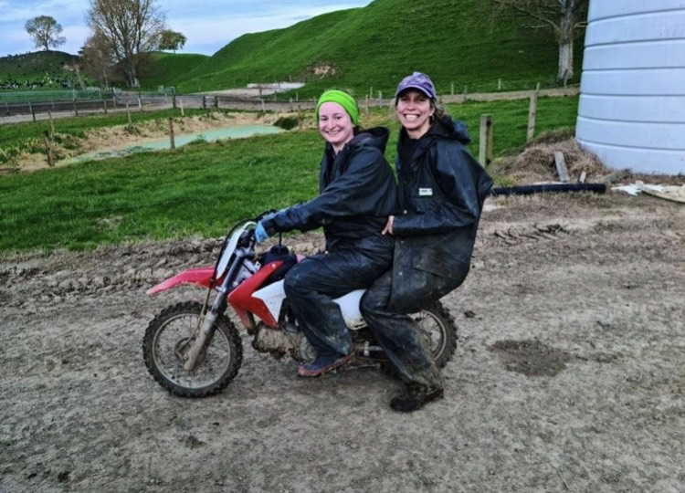

My favorite job was calf rearing on a dairy farm. Click on the photo below for more information.
But first! Here is a table containing all the jobs I worked while in New Zealand.
| Job Title | Location | North or South Island? | Length of Role | Did I enjoy it? |
|---|---|---|---|---|
| Charity Fundraiser | Travelling Position | South Island | 2 months | Not really |
| Kiwifruit Packer | Kerikeri | North Island | 3 months | Mostly, yes! |
| Kiwifruit Tree Pruner | Kerikeri | North Island | 1 month | Yes! |
| Au Pair | Te Awamutu | North Island | 3 months | Depended on which kid I had |
| Grape Harvest | Blenheim | South Island | 2 weeks | Yes but I ate too many grapes |
| Salt Harvest | Lake Grasmere | South Island | 3 weeks | NO! The worst job I had |
| Food Packer in Warehouse | Blenheim | South Island | 2 months | Yes! Was sad to leave |
| Calf Rearer | Te Awamutu | North Island | 6 months | Yes! Favorite job in NZ |
| Kiwifruit Bud Thinning | Te Puke | North Island | 3 months | Yes |
| Pine Tree Cutting/Planting | Rangiora | South Island | 4 months | Yes |
Now, back to my favorite job in New Zeland - calf rearing on a dairy
farm
I liked this job because it involved a lot of learning and a lot of
problem solving. I didn't grow up on a farm so I had to learn how to
handle animals, drive various farm vehicles, and more. Every day was
different! I was always having to figure out what the most efficient way
to go about my day would be.
My partner made a video that includes some footage from the calf rearing
season on our farm. You can watch it below.